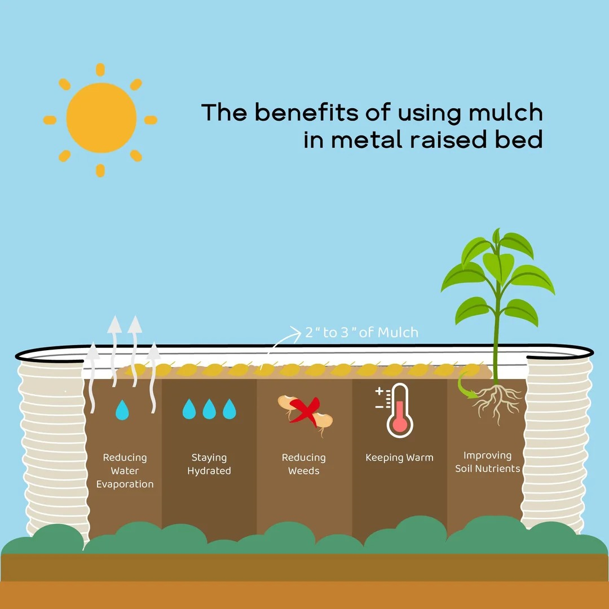
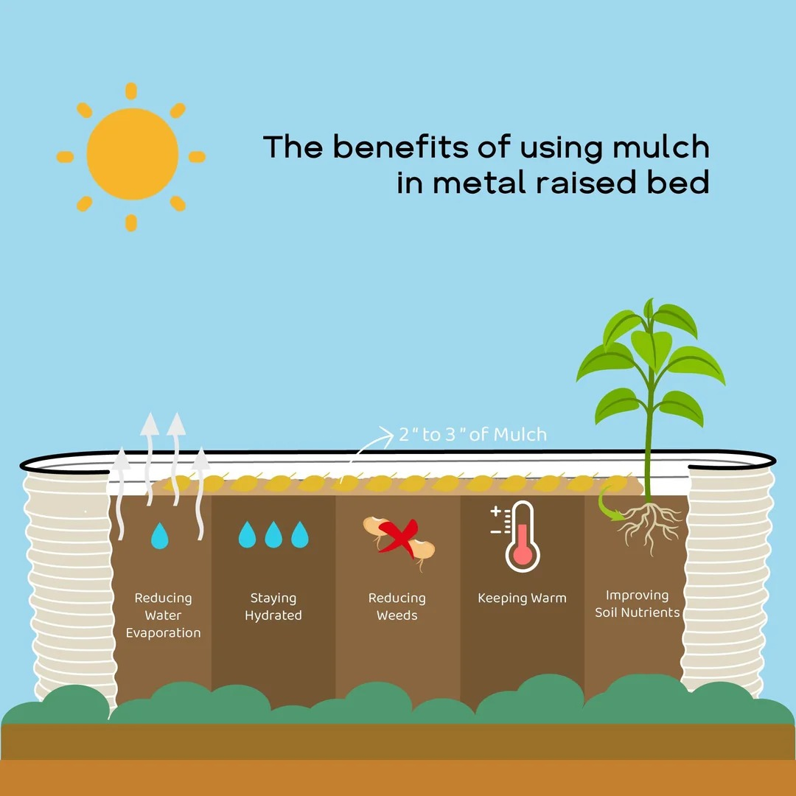

Plant native wildflowers in your area. The big benefit is that they are well suited to this environment, meaning they will flourish almost fully without any maintenance. This helps the local ecology while saving you money and time.
Choose efficient irrigation methods such as drip irrigation or, for small-scale gardening, a water can. Save rainwater in a bucket at the corner of your garden or rooftop to water your plants.
Proper soil practices are essential for eco-friendly gardening, as they significantly improve soil quality and promote microflora biodiversity. Adding compost and organic matter enriches the soil, enhancing its fertility and natural properties. Additionally, reducing tillage practices allows beneficial soil organisms to flourish and supports effective carbon storage. By adopting these practices, gardeners can create a healthier, more sustainable environment for their plants.
 

Avoid the application of chemals
Applying synthetic pesticides and fertilisers can harm the environment and Wildlife →
Instead, choose natural pest control and fertilisation methods such as:
Your garden and balcony can create a vibrant ecosystem, a biological community of interacting organisms and their
physical surroundings.
Biodiversityrefers to the variety of life forms within an ecosystem. In essence, the healthier the conditions are
for your ecosystem, the greater the biodiversity you will experience in your garden or on your balcony.
“How to Create an Eco Garden: The Practical Guide to Sustainable and Greener Gardening” by John Walker
“How to Become a Gardener: Find Empowerment in Creating Your Food Security” by Ashlie Thomas
“Sustainable Garden: Projects, Insights and Advice for the Eco-Conscious Gardener” by Marian Boswall and Jason Ingram
“Resilient Garden: Sustainable Gardening for a Changing Climate” by Tom Massey
“Dry Climate Gardening: Growing Beautiful, Sustainable Gardens in Low-Water Conditions” by Noelle Johnson
“The Humane Gardener: Nurturing a Backyard Habitat for Wildlife” by Nancy Lawson
“The Regenerative Garden: 80 Practical Projects for Creating a Self-Sustaining Garden Ecosystem” by Stephanie Rose